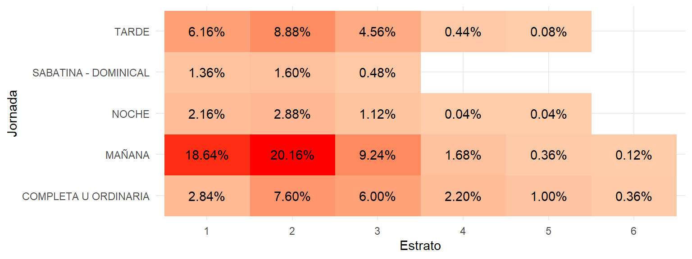

4 Análisis correlacional
Es posible medir la relación entre dos variables, pero esto depende de qué tipo de variables son.
- Dos cuantitativas
- Una cuantitativa y una cualitativa
- Dos cualitativas
4.1 Dos variables cuantitativas
La relación entre dos variables cuantitativas puede ser medida con los siguientes estadísticos.
- Covarianza
- Correlación de Pearson
- Correlación de Spearman
4.1.1 Covarianza
Covarianza entre dos variables
\[ S_{xy} = \frac{1}{n}\sum\limits_{i = 1}^n (x_i - \overline{x})(y_i - \overline{y})\]
4.1.2 Correlación de Pearson
- Definición: Mide la fuerza y la dirección de la relación lineal entre dos variables continuas.
- Rango: -1 a 1, donde 1 indica una relación lineal positiva perfecta, -1 una relación lineal negativa perfecta y 0 ninguna relación lineal.
- Cálculo: Se basa en la covarianza de las dos variables dividida por el producto de sus desviaciones estándar.
\[\rho_{xy} = \frac{\sum x_iy_i - n\overline{x}\overline{y}}{(n-1)S_xS_y}\]
4.1.3 Correlación de Spearman
- Definición: Mide la fuerza y la dirección de la relación monótona (no necesariamente lineal) entre dos variables.
- Ventaja: Es más flexible que la correlación de Pearson y puede ser utilizada en casos donde la relación no es lineal pero aún sigue una tendencia consistente.
- Rango: -1 a 1, donde 1 indica una relación monótona positiva perfecta, -1 una relación monótona negativa perfecta y 0 ninguna relación monótona.
\[\rho = 1 - \frac{6\sum D^2}{n(n^2 - 1)}\]
donde D es la diferencia entre los correspondientes estadísticos de orden de x - y. N es el número de parejas de datos.
4.1.4 Kendall
- Definición: La correlación de Kendall, o tau de Kendall, es una medida de la asociación entre dos variables ordinales que evalúa la relación monótona. A diferencia de Spearman, que utiliza rangos para calcular la correlación, Kendall se basa en la concordancia y discordancia de pares de observaciones.
- Cálculo:
- Concordancia: Dos pares de observaciones están en concordancia si el orden de las observaciones en ambos pares es el mismo.
- Discordancia: Dos pares de observaciones están en discordancia si el orden de las observaciones en un par difiere del orden en el otro par.
- Aplicación: Útil en análisis de datos ordinales y cuando se desea evaluar la relación entre variables con distribución no normal.
4.2 Asociación numérica - categórica
En ocasiones queremos encontra la correlación entre una variable numérica y una categórica.
4.2.1 Elementos gráficos
Para visualizar la correlación entre una variable numérica y una categórica, se pueden utilizar diversos elementos gráficos:
- Diagramas de caja (boxplots): Muestran la distribución de la variable numérica para cada categoría de la variable categórica.
- Gráficos de barras: Representan la media o mediana de la variable numérica para cada categoría de la variable categórica.
4.2.2 ANOVA
El análisis de la varianza es una técnica estadística utilizada para comparar las medias de tres o más grupos y determinar si al menos uno de los grupos es significativamente diferente.
4.2.3 Tipos
- ANOVA de una vía: Examina el efecto de una sola variable independiente (factores) sobre la variable dependiente.
- ANOVA de más vías: Examina el efecto de dos variables independientes sobre la variable dependiente, y sus interacciones.
Df Sum Sq Mean Sq F value Pr(>F)
ESTRATO 5 55928 11186 134.7 <2e-16 ***
Residuals 2494 207109 83
---
Signif. codes: 0 '***' 0.001 '**' 0.01 '*' 0.05 '.' 0.1 ' ' 14.2.4 Test Kruskal-Wallis
El test de Kruskal-Wallis es una prueba no paramétrica utilizada para comparar las medianas de tres o más grupos independientes. Es una alternativa al ANOVA cuando los supuestos de normalidad no se cumplen.
Ideal para datos ordinales o cuando la variable numérica no sigue una distribución normal.
Kruskal-Wallis rank sum test
data: INGLES_PUNT by ESTRATO
Kruskal-Wallis chi-squared = 292.63, df = 5, p-value < 2.2e-164.3 Asociación categórica - categórica
En ocasiones es necesario encontrar relaciones entre variables categóricas.
4.3.1 Tablas de contingencia
Tablas que muestran la frecuencia de las combinaciones de dos variables categóricas. Permiten observar la relación entre las variables categóricas.
Ayudan a visualizar y analizar la dependencia entre variables categóricas.

4.3.2 Prueba de chi cuadrado
Prueba estadística que evalúa si existe una asociación significativa entre dos variables categóricas. Compara las frecuencias observadas en la tabla de contingencia con las frecuencias esperadas bajo la hipótesis nula de independencia.
Determina si hay una relación significativa entre las variables categóricas.
Pearson's Chi-squared test
data: tb_example$COLE_INST_JORNADA and tb_example$ESTRATO
X-squared = 236.95, df = 20, p-value < 2.2e-164.3.3 Prueba exacta de Fisher
Prueba estadística utilizada para determinar la asociación entre dos variables categóricas en tablas de contingencia de 2x2, especialmente cuando las frecuencias esperadas son pequeñas.
Proporciona una alternativa más precisa a la prueba de chi cuadrado cuando los tamaños de muestra son pequeños.
Fisher's Exact Test for Count Data with simulated p-value (based on
2000 replicates)
data: tb_example$COLE_INST_JORNADA and tb_example$ESTRATO
p-value = 0.0004998
alternative hypothesis: two.sided